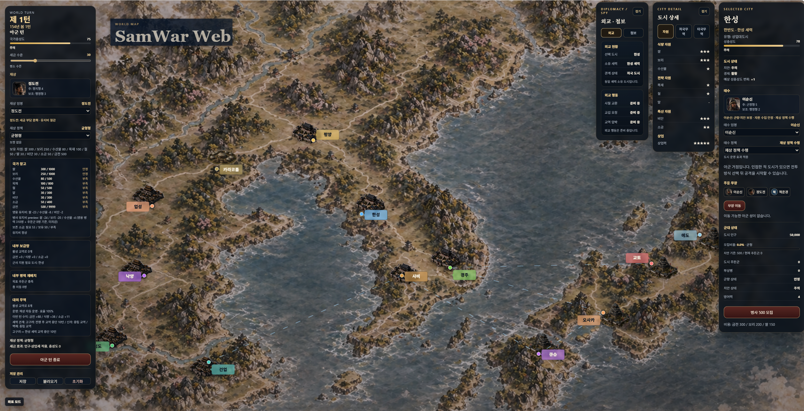

왕이 된다는 것
재상, 성주, 자원, 그리고 전쟁을 준비하는 나라
2026년 5월 8일플레이어는 장수가 아니다
EASTWAR를 만들면서 한 가지 질문이 계속 따라다녔다. "플레이어는 누구인가?"
기존 삼국지류 게임은 명확하다. 나는 유비다. 나는 조조다. 특정 역사 인물의 관점에서 시작한다. 하지만 EASTWAR는 이순신, 노부나가, 광개토대왕, 관우가 한 나라 안에 공존한다. 한 명의 역사 인물로 시작하면 이 설정이 말이 안 된다.
그래서 답은 이렇게 정해졌다.
플레이어는 왕이다. 역사 속 특정 인물이 아니라, 동아시아를 통일하려는 국가의 의지 그 자체.
왕은 칼을 드는 사람이 아니다. 전장을 설계하고, 장수를 배치하고, 나라를 운영하는 존재다. 이 정의 하나로 모든 게 맞아떨어졌다. 이순신과 관우가 같은 나라에 있어도 자연스럽고, 광개토대왕과 노부나가가 한 진영에서 싸워도 이상하지 않다. 플레이어가 특정 인물이 아니라 "왕"이니까.

재상과 성주 — 나라는 사람이 운영한다
왕이 직접 모든 도시를 관리할 수는 없다. 그래서 두 가지 직책이 생겼다. 재상과 성주.
재상은 국가 전체의 방향을 잡는 인물이다. 정도전을 재상으로 임명하면 세금이 안정되고 민심이 오른다. 노부나가를 재상으로 앉히면 군사 생산이 빨라지지만 민심이 흔들릴 수 있다. 도림이 재상이 되면 첩보와 이간이 강해지는 대신 치안이 불안해진다. 재상 한 명의 선택이 나라 전체의 색깔을 바꾼다.
성주는 각 도시의 현장 운영자다. 이순신을 한성 성주로 두면 방어력과 군율이 오른다. 관우를 낙양 성주로 임명하면 치안과 충성도가 높아진다. 성주를 임명하지 않으면 재상이 임시로 관리하지만, 효율은 떨어진다.
핵심은 이거다. 유저가 직접 매 턴 수치를 조작하는 게 아니다.
유저는 사람을 배치하고, 나라는 자동으로 굴러간다.
중요한 전선 도시에는 좋은 성주를 박는다. 후방 도시는 재상에게 맡긴다. 공격 준비 도시에는 군사형 성주를, 수입 도시에는 내정형 성주를. 이 배치 결정이 전략의 핵심이 된다.
재상과 성주의 궁합
한 가지 더. 재상과 성주는 단순히 수치를 올리는 게 아니다. 궁합이 있다.
정도전이 재상이고 이순신이 한성 성주라면 — 제도 개혁과 군율이 맞물리면서 치안·방어·민심이 동시에 오른다. 반면 노부나가가 재상인데 정도전이 성주라면, 강한 확장 정책과 제도 안정론이 충돌하면서 수입은 오르지만 민심이 흔들린다.
재상 도림에 성주 관우라면? 첩보·이간 중심 운영과 충의·정면돌파 성향이 부딪힌다. 첩보 성공률은 오르지만 치안 효율이 떨어진다.
게임 안에서 이런 메시지가 뜨는 것이다.
"재상 정도전과 낙양 성주 관우의 궁합이 좋습니다. 낙양의 치안이 안정되고 징병 효율이 상승합니다."
"재상 노부나가와 평양 성주 도림의 정책이 충돌합니다. 수입은 증가했지만 민심이 흔들립니다."
내정이 단순한 수치 관리가 아니라, 사건처럼 느껴지게 만드는 장치다.
자원은 하나가 아니다
자원 설계에서 중요한 결정이 하나 있었다. 단일 식량(food) 하나로 가지 않는다는 것이다.
EASTWAR의 자원은 크게 두 계열로 나뉜다. 식량 계열과 돈 계열.
식량은 세 가지다. 쌀은 가을에 한 번 대량으로 들어오는 핵심 자원이다. 보리는 봄에 수확하는 버팀목이다. 수산물은 매 턴 조금씩 들어오는 해안 지역의 숨통이다.
돈도 두 가지다. 상업 수입은 계절마다 꾸준히 들어온다. 특산물은 연 1회 지역 고유의 대박 수입이다. 광산, 비단, 도자기, 항구, 말, 철 — 어느 도시를 먼저 먹느냐에 따라 전략이 달라진다.
계절 수입 흐름은 이렇다. 봄에는 보리와 상업 수입이 들어온다. 여름은 상업 수입만. 가을은 쌀과 상업 수입이 함께 온다. 겨울은 상업 수입과 연간 특산물 수입이 한꺼번에 들어온다. 매 턴은 수산물이 조금씩.
이 구조 덕분에 지역마다 개성이 생긴다. 해안 도시, 농업 도시, 상업 도시, 특산물 도시 — 단순한 영토 확장이 아니라 전략적 점령이 된다.
저 도시엔 쌀이 많다. 저 도시엔 철이 난다. 저 도시는 수군에 유리하다.
육전의 상성, 해전의 개성
병종 설계도 이 날 정리됐다. 초기 육전은 세 가지 병종으로 간다. 보병(창병), 기병, 조총병.
상성은 단순하고 명확하게 — 보병이 기병을 막고, 기병이 조총병을 압박하고, 조총병이 보병을 제압한다. 설명하기 쉽고, 전략성이 바로 생기고, 나중에 궁병·공성병을 추가하기도 쉽다.
하지만 EASTWAR의 진짜 시그니처는 해전이다. 육전은 단순하게 유지하고, 해전에서 깊이를 만드는 것이 방향이다.
조선 수군은 계산형이다. 판옥선과 거북선을 앞세워 거리를 유지하며 화포로 두드린다. 일본 수군은 돌격형이다. 아타케부네로 빠르게 붙어서 접현 난전을 만든다. 중국 수군은 압박형이다. 누선을 앞세워 물량과 지속 화력으로 밀어붙인다.
조선은 계산, 일본은 돌격, 중국은 지속 압박. 세 나라의 전투 스타일이 바다 위에서 가장 선명하게 드러난다.
게임 루프의 완성형
내정 설계가 끝나자 EASTWAR의 전체 게임 루프가 선명해졌다.
도시를 점령해 장수를 얻는다. 장수를 이동시켜 전선을 만든다. 재상과 성주를 배치해 나라를 자동으로 운영한다. 계절별 자원 수입과 군대 모집으로 전쟁을 지속한다. 그리고 다시 점령한다.
지금 v0.4까지 구현된 루프는 전투와 점령 중심이다. v0.5부터 내정이 붙으면 전쟁을 준비하는 과정이 생긴다. 전선 도시를 강화하고, 군량을 비축하고, 재상과 성주를 배치한 뒤 출정하는 흐름.
전쟁만 하는 게임에서, 전쟁을 준비하는 게임으로. 이게 v0.5가 열어야 할 문이다.
단, 지금 당장 모든 걸 다 구현하는 건 아니다. v0.5-0은 최종 내정 시스템이 아니라 내정 시스템을 담을 그릇이다. 자원 구조를 심고, 패널을 만들고, 나중에 교체할 수 있는 계산 함수를 올려두는 것. 재상·성주 궁합, 병종 모집, 해전 — 이건 그 다음이다.
설계는 끝났다. 이제 짓는다.